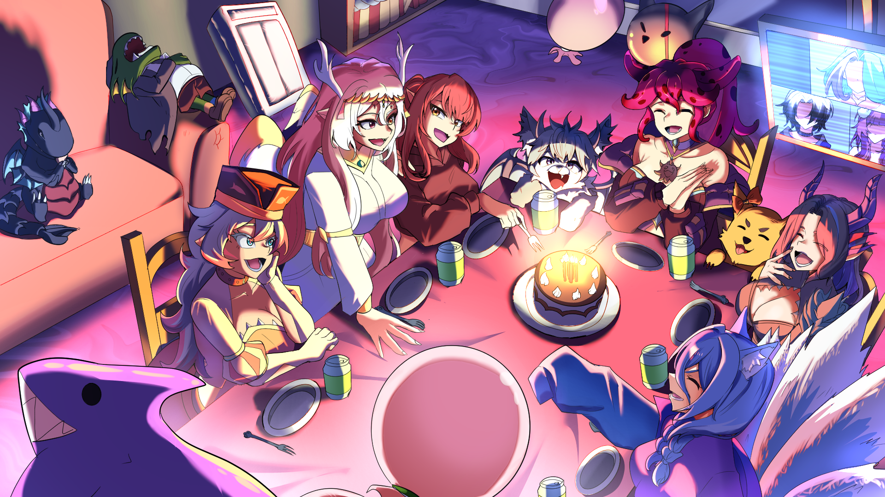

Couaxia vivait sur une planète lointaine nommée SAPHIRA. Un monde fascinant où coexistaient de nombreuses espèces venues des profondeurs cosmiques. Elle appartenait aux Kraduks, une espèce rare et intelligente semblable à des poulpes, capable de survivre aussi bien dans les océans luminescents que dans les cités suspendues de Saphira. Aimée par sa famille et entourée d’amis fidèles, Couaxia avait pourtant une différence : elle rêvait d’ailleurs. Depuis toute petite, elle observait les étoiles avec émerveillement. Sur Saphira, chaque jeune devait suivre une formation stricte de pilote spatial. À la fin de cet apprentissage, chacun recevait son propre vaisseau. Le sien, elle l’avait nommé Avadora.
Un vaisseau rapide, élégant et équipé d’un système de camouflage capable de disparaître dans l’obscurité interstellaire. Couaxia adorait lire les récits d’anciens explorateurs revenus de leurs voyages. Ces livres racontaient des mondes inconnus, des créatures extraordinaires et des mystères encore irrésolus. Ils ont nourri en elle une envie irrépressible de découvrir l’univers. Dès l’âge de 10 ans, elle commença à étudier les galaxies répertoriées. Après des années de recherches acharnées, elle identifia une galaxie très éloignée de la sienne… Une galaxie où des signes de vie semblaient exister. À 120 ans — l’âge adulte chez les Kraduks — elle prit sa décision. Accompagnée de ses fidèles compagnons, Hylda et Cita, elle quitta Saphira à bord d’Avadora.
